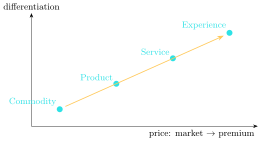

Definition
Marketing mix: the set of tactical, controllable marketing levers — product, price, place, promotion — harmonized to deliver the desired value to target segments. Price is covered in pricing.
Model
Product: an extended view
Product: anything offered to a market for attention, acquisition, use or consumption that can satisfy a need. Service: intangible, from interaction with the firm's people; key source of added value. Experience: a personal reaction from interactions with product/firm, involving rational, emotional, sensory, physical and spiritual levels (Gentile et al. 2007).
| Level | Nature | Coffee example | Price |
|---|---|---|---|
| Commodity | undifferentiated | coffee beans | market |
| Product | tangible, storable | packaged Illy coffee | ↑ |
| Service | intangible, people | espresso at the bar | ↑ |
| Experience | engages, emotional reaction | premium coffee house | premium |
Moving up the ladder increases differentiation and the price customers accept.
Product attributes
| Attribute | Meaning | Example |
|---|---|---|
| Quality level | right quality for the target | 5-star vs low-cost hotel |
| Quality | same quality every time | Starbucks: same taste, |
| consistency | (conformance) | Milan or New York |
| Features | technical options; judge by value to | car trim levels |
| customer vs cost to firm | ||
| Style | appearance only | modern/classic chair |
| Design | function and use, not only look | ergonomic water bottle |
Brand
Name, term, symbol, logo or combination identifying the producer; customers build affective relationships beyond the physical product. Functions: guarantee (signature, accountability), orientation (positions offers), practicality (memory aid), personalization (social communication), ludic (novelty, surprise). Brand equity = brand image (perceived vs intended mental representations) + brand strength (attachment: lower price sensitivity, repurchase rate, exclusivity rate) + brand value (financial). High equity → awareness and loyalty.
Place: distribution channels
A channel is a structure of intermediary partners making goods available to final customers (upstream supply chain → focal firm → downstream channels). Apple in Milan: Apple Store, Apple e-commerce, click-and-collect, retailer MediaWorld. Intermediaries exist for cost efficiency: contacts, experience, operations. Multichannel B2C: direct channel (producer → segment) and indirect (agent → wholesaler → retailer → segment).
| System | Idea |
|---|---|
| Vertical marketing | focal firm controls the channel, removes |
| dysfunctional behaviour, one coherent system | |
| Franchising (vertical) | franchisor licenses brand for royalties, gives |
| tools; franchisee pays to join (McDonald's) | |
| Horizontal marketing | partnership at the same level: synergies, |
| wider or complementary range |
Channel conflicts — internal (firm adds online to its own network): cannibalization, under-used stores, price gaps, desynchronization; external (adds direct online to indirect channels): alienated distributors, loss of control, value shifting upstream.
Promotion mix
| Tool | Instruments | Purpose |
|---|---|---|
| Advertising | TV spots, press, billboards, web | present the offer |
| Sales promotion | contests, offers, samples, coupons | incentive to buy |
| Public relations | press conferences, sponsorship | build brand image |
| Direct marketing | telemarketing, call centre, web | talk to the customer |
| Personal selling | sales force | convince to buy |
Integrated marketing communication coordinates them into one clear, consistent message. Cost per conversion = campaign cost / customers obtained. Advertising: many contacts (some off-target), long-term effect, big investment; personal selling: few contacts, high cost per conversion, selective. New media mix: search advertising, display ads, social media.
Example
A coffee roaster selling beans at market price can move to branded packs, then a café, then a premium tasting experience: each step adds service and experience and supports a higher price.
Pitfall
Style ≠ design. Quality level ≠ consistency: a low-cost hotel can be perfectly consistent. Price is the only P that generates revenue; the others cost.
Recall
Draw the commodity → experience ladder; list five brand functions and three components of brand equity; compare vertical, franchise and horizontal systems; list the five promotion tools.
Picture

Each step adds intangible value that customers pay for.